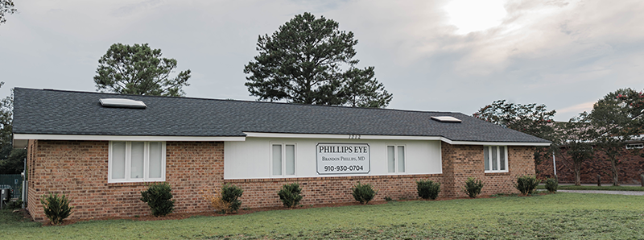

1212 Walter Reed Road
Fayetteville, NC 28304
1212 Walter Reed Road
Fayetteville, NC 28304
With treatments like OptiLight by Lumenis, we can help manage your dry eye symptoms and get you back to seeing clearly and comfortably. Keep reading to learn more about OptiLight by Lumenis and how it can improve your life.


Dry eye disease is becoming increasingly common affecting millions of people worldwide. This chronic condition can significantly impact your life, sometimes making even the smallest of tasks seem difficult.
If you have eye pain, blurry vision, and dry or watery eyes, it could be a sign that you have dry eye disease. But don't worry! With an in-depth eye exam, our team can assess your vision and eye health to get you the treatment you need.
Dry eye disease is a common eye condition that occurs when there is an issue with any one of the three components of your tears.
Your tears are made up of 3 distinct layers, all of which work together to keep your eyes healthy:
There are two types of dry eye disease.
EDE is the most common type of dry eye disease. This type of dry eye occurs when you lack the proper amount of oil in your tears. When this happens, your tears can evaporate too quickly, drying out your eyes.
In some cases, EDE can be caused by meibomian gland dysfunction, a disorder where the meibomian glands in your eyes become blocked, limiting the amount of oil being produced for your tears.
If you suffer from ATD, your eyes lack the aqueous layer in your tears. This means that your eyes aren't producing enough tears to keep the eye moist, which can lead to irritating and uncomfortable symptoms.
If you are suffering from dry eye disease, you may notice any of the following symptoms:
If you are experiencing any of these symptoms, book an appointment with your eye doctor to receive a dry eye disease diagnosis and get the treatment you need.
OptiLight by Lumenis is a safe, gentle, and effective treatment done to manage dry eye disease. This non-invasive procedure is the first and only FDA-approved intense pulsed light (IPL) treatment for dry eye management.
OptiLight uses pulses of light precisely administered in the area below the eyes to reduce dry eye symptoms. This 10-15 minute procedure can relieve dry eye symptoms by:
If you are experiencing any of these symptoms, book an appointment with your eye doctor to receive a dry eye disease diagnosis and get the treatment you need.
If your eye doctor has recommended the OptiLight treatment, they will go over everything you can expect before, during, and after your appointment.
To prepare for your appointment you should avoid:
This treatment is fast and simple, taking only 10-15 minutes. During your treatment your doctor will apply a cool gel on the treatment area and cover your eyes with shields to protect them.
As light is applied to the skin, you may experience a warm or a tapping sensation, but you shouldn't feel any pain.
While side effects are uncommon, your eyes may feel slightly more dry or gritty for the day following your procedure. If you do experience dry eyes, you can use preservative-free artificial tears.
Following your treatment, your skin will be sensitive, so we recommend avoiding sun exposure and wearing sunscreen.
How do you know if OptiLight is the right treatment for you? During an eye exam, your doctor can determine whether or not it is the right option for you.
In general, OptiLight isn't recommended for patients who:
You don’t have to live with the uncomfortable symptoms of dry eye disease. With OptiLight by Lumenis, your symptoms can be managed effectively and efficiently, restoring your quality of life.
Our team is always here to help you find relief from dry eyes. Book an appointment today to see how OptiLight by Lumenis can help you!

Phillips Eye is conveniently located in the heart of Fayetteville's healthcare district at Walter Reed Road, adjacent to the campus of Cape Fear Valley Medical Center.